# Basics
library(tidyverse)
library(patchwork)
library(knitr)
library(here)
# Analysis-specific
library(Seurat)
library(AnnotationHub) # To connect to ensembldb
library(ensembldb) # To get transcript information
# These Bioconductor packages (AnnotationHub and ensembldb) contain functions
# with the same name as several dplyr functions (select, filter, etc.), so I
# needed to specify those with dplyr:: thoroughout this script9. Junction differential expression; between astrocyte clusters
About this analysis
In script 08 I created gene-specific junction Seurat objects of the astrocytes, with the dimensionality reductions and cluster annotation I made with the short-read data transferred to it. In this script I test which junctions of a gene are differentially expressed between the astrocyte clusters, using Seurat’s FindAllMarkers() (each cluster versus all other clusters). The next script (10) tests differential expression between ALS and controls with a pseudobulk approach.
For every gene, the full results are stored as a .csv, a dotplot of the top junctions is displayed, and a multi-page PDF with a UMAP feature plot and a violin plot for every junction is saved to disk for inspection.
Preparation
Prerequisites
This script was run with the conda environment r_scrnaseq_core.
Packages
Directories
# Get string of home directory. I used the here package, which sets the home
# directory when loading library(here)
dir_home <- here::here()
## Data directories
dir_raw <- file.path(dir_home, "data/raw")
dir_data <- file.path(dir_home, "data/processed")
dir_temp <- file.path(dir_home, "data/temporary")
## Results directories
# Create subfolders with the name of this script, so all figures/tables of
# this script are in the same place
folder_name <- knitr::current_input(dir = FALSE)
folder_name <- str_remove(folder_name, "\\.\\w*$")
dir_fig <- file.path(dir_home, "results/figures", folder_name)
dir.create(dir_fig, recursive = TRUE, showWarnings = FALSE)
dir_tab <- file.path(dir_home, "results/tables", folder_name)
dir.create(dir_tab, recursive = TRUE, showWarnings = FALSE)
## Manuscript figure directory
# rds/grob objects for report figures land here, to be assembled by
# scripts/11_assemble_manuscript_figures.qmd
dir_man <- file.path(dir_home, "results/figures/manuscript")
## Cache directory
# For this script, I'm setting a cache directory; this is specific for the
# ensembldb loading for the exon junction plots. AnnotationHub downloads the
# database to a cache folder. If I wouldn't manually set it, it would use the
# cache of my home directory instead ("/path/to/folder"), which only
# has 7 GB space
dir_cache <- file.path(dir_temp, "annotationhub_cache")
dir.create(dir_cache, recursive = TRUE, showWarnings = FALSE)Defining variables
This code block defines variables to be used throughout the rest of the document. If someone ever wants to run these scripts with different variables, they can easily change it here. I’ll substantiate any choices here
# Genes of interest. The gene-specific objects were created in 08.
# NOTE: keep this list in sync with 08 and 10!
genes <- c("GFAP", "ANXA11", "CRYAB")
# Metadata column with the clusters to compare (set as the identities)
cluster_var <- "annotation"
# Reduction used in the feature plots
reduction_plot <- "umap"
## Exon junction plots ---------------------------------------------------------
# Columns taken from the EnsDb exon table
exon_columns <- c(
"gene_name",
"seq_name", # the chromosome the gene is on, added as sanity check
"exon_id",
"exon_seq_start",
"exon_seq_end",
"seq_strand", # the strand which the gene is on
"tx_id", # tx = transcript
"tx_name", # more human-readable transcript name
"tx_is_canonical",
"tx_cds_seq_start", # start coordinate of coding region of the transcript
"tx_cds_seq_end", # end coordinate of coding region of the transcript
"exon_idx" # the exon's rank within its transcript (exon 1, 2, 3...)
)
# This is the latest reference in the ensembldb version I installed for Homo
# sapiens GRCh38
ensdb_record <- "AH119325"
# Reference transcript per gene. "canonical" is the default. For some genes the
# canonical transcript gave a weird plot (two different tx_id/tx_name entries),
# so I defined a transcript manually
transcript_ref <- c(
ANXA11 = "ENST00000422982"
)Helper functions
Click here to view the helper functions of this document
theme_quarto() and theme_manuscript()
I created my own themes to add to figures. theme_quarto() is used to add themes to figures as displayed in the Quarto document and saved to disk as .pdf or .png. theme_manuscript() is used to add themes to figures as they will end up in the manuscript. I can already add arguments with theme() or specific themes (e.g. theme_classic(), my personal favourite) to plots; adding theme() afterwards keeps whatever was added in theme() before it, unless I specify that arugment here - that’s why I allowed to specify some things within my functions as well.
theme_quarto <- function(
legend_position = "right",
plot_title = element_blank()
) {
theme(
plot.title = plot_title,
legend.position = legend_position
)
}
theme_manuscript <- function(
legend_position = "none",
plot_title = element_blank(),
axis_title_size = 8,
axis_text_size = 6
) {
theme(
plot.title = plot_title,
legend.position = legend_position,
axis.title = element_text(size = axis_title_size),
axis.text = element_text(size = axis_text_size),
legend.key.size = unit(0.4, "cm"),
legend.text = element_text(size = 8),
legend.title = element_text(size = 9)
)
}save_plot()
This document displays all the figures I make, but I also want them saved to disk — both as .png and .pdf. I only need to provide the ggplot object, a filename (without extension), and optionally the width and height of the figure and additional arguments put into themes.
The figures for my written report contain subfigures spread across multiple scripts. Since I want to assemble these panel figures via R code rather than by hand, save_plot() can also optionally save the plot object itself to disk as an .rds file, for a final script to later combine with patchwork. Set figure to the name the figure should carry in the report (e.g. "SF1A") to trigger this; leave it NULL (the default) to just save the .png/.pdf as normal.
A live ggplot object carries its underlying data along with it — for plots built from large Seurat objects, this can balloon the saved file to gigabytes. To avoid this, save_plot() converts the object to a grob (a static, pre-rendered drawing, with no data attached) before saving it as .rds. This is controlled by the grob argument, and defaults to TRUE, since converting a small plot costs nothing but forgetting to convert a large one is expensive. Set grob = FALSE only if a later step specifically needs the original, live ggplot object rather than its rendered form.
save_plot <- function(
p, filename,
width = 10, height = 6,
figure = NULL, grob = TRUE, apply_theme = TRUE,
add_tag = TRUE, tag_text_size = 14,
legend_pos_manuscript = "none"
) {
## Save image on disk as png and pdf
# Add Quarto-specific theme, unless the plot has its own custom theme
if (apply_theme) {
p_image <- p + theme_quarto()
} else {
p_image <- p
}
file_png <- file.path(dir_fig, paste0(filename, ".png"))
ggsave(file_png, p_image, width = width, height = height, dpi = 150)
file_pdf <- file.path(dir_fig, paste0(filename, ".pdf"))
ggsave(file_pdf, p_image, width = width, height = height, dpi = 150)
## Save the ggplot object on disk as an rds file
if (!is.null(figure)) {
# Add tag if needed
if (add_tag) {
tag <- str_extract(figure, "[A-Z]$")
p <- p +
labs(tag = tag) +
theme(
plot.tag = element_text(
face = "bold",
size = tag_text_size,
hjust = 0, vjust = 0
)
)
}
# Add manuscript-specific theme, unless the plot has its own custom theme
if (apply_theme) {
p <- p + theme_manuscript(legend_position = legend_pos_manuscript)
}
file_rds <- file.path(dir_man, paste0(figure, ".rds"))
# Convert the object to a grob if needed
if (grob) {
p <- ggplotGrob(p)
}
# Save on disk
saveRDS(p, file_rds)
}
}print_tabset()
Quarto cannot cross-reference figures that are made inside a loop. To still display the plots of a loop in this document, I collect them in a named list and show them as tabs with print_tabset(). The names of the list become the tab titles. It also accepts data frames (shown as a table). This function writes raw Quarto markdown, so the chunk that calls it needs the chunk option #| output: asis. heading_level should be one deeper than the heading above the chunk.
print_tabset <- function(obj_list, heading_level = 3) {
cat("::: {.panel-tabset}\n\n")
for (nm in names(obj_list)) {
cat(strrep("#", heading_level), " ", nm, "\n\n", sep = "")
obj <- obj_list[[nm]]
if (inherits(obj, "ggplot")) {
print(obj)
} else if (is.data.frame(obj)) {
cat(knitr::kable(obj, format = "pipe"), sep = "\n")
}
cat("\n\n")
}
cat(":::\n\n")
}Exon junction plot functions
The functions below draw an exon junction relative to a reference transcript from the Ensembl database. They are used in the section on exon junction plots at the end of this document.
get_gene_exons() extracts the exon table of a gene from the EnsDb as a tibble.
get_gene_exons <- function(edb, gene, columns = exon_columns) {
exons(
edb,
columns = columns,
filter = GeneNameFilter(gene),
return.type = "data.frame"
) |>
as_tibble()
}There’s a small mismatch between my junctions and the EnsDb entries: my junction strings (chr[name]:[pos1]:[pos2]) store the first and last base of the intron, while the EnsDb exon table stores exon boundaries, which are one base further out (exon_end = intron_start - 1, exon_start = intron_end + 1). I found this by testing it empirically: acceptor pos2 + 1 matched a catalogued exon start; donor pos1 - 1 did not match any catalogued exon end. parse_junction() takes care of this.
parse_junction <- function(junction) {
# Use RegEx to parse chromosome and positions
pattern <- "^(chr\\w+):(\\d+):(\\d+)" # might have ":-" at end, so don't use $
capture <- str_match(junction, pattern)
# Creates a matrix with columns: [,1] full match, [,2] chromosome,
# [,3] pos1, [,4] pos2
# Convert to tibble to easily use further on
tibble(
chromosome = capture[, 2],
pos1 = as.numeric(capture[, 3]) - 1,
pos2 = as.numeric(capture[, 4]) + 1
)
}classify_junction() determines whether the donor site, acceptor site and the pair of them are known in the gene’s catalogued transcripts.
classify_junction <- function(junction_ti, exons_gene) {
strand <- unique(exons_gene$seq_strand)
if (length(strand) != 1) {
stop("exons_gene spans more than one strand - check the gene filter")
}
# Map (pos1, pos2) onto (donor, acceptor) depending on strand.
# Forward: transcript order == genomic order -> donor = pos1 (upstream
# exon's end boundary), acceptor = pos2 (downstream exon's start boundary)
# Reverse: transcript order is flipped -> donor = pos2 (start boundary of
# the exon that comes first in transcript order), acceptor = pos1 (end
# boundary of the exon that comes second). See my paper sketch.
if (strand == 1) {
donor_pos <- junction_ti$pos1
acceptor_pos <- junction_ti$pos2
donor_col <- "exon_seq_end"
acceptor_col <- "exon_seq_start"
} else if (strand == -1) {
donor_pos <- junction_ti$pos2
acceptor_pos <- junction_ti$pos1
donor_col <- "exon_seq_start"
acceptor_col <- "exon_seq_end"
} else {
stop("Unexpected strand value: ", strand)
}
donor_known <- donor_pos %in% exons_gene[[donor_col]]
acceptor_known <- acceptor_pos %in% exons_gene[[acceptor_col]]
# A known PAIR requires donor and acceptor to belong to two exons that are
# consecutive within the same transcript - not just two boundaries that
# each independently exist somewhere in the gene.
pair_known <- exons_gene |>
arrange(tx_id, exon_idx) |>
group_by(tx_id) |>
mutate(next_boundary = lead(.data[[acceptor_col]])) |>
ungroup() |>
dplyr::filter(.data[[donor_col]] == donor_pos, next_boundary == acceptor_pos) |>
nrow() > 0
category <- case_when(
donor_known & acceptor_known & pair_known ~ "known pair",
donor_known & acceptor_known & !pair_known ~ "novel pair, known sites",
donor_known & !acceptor_known ~ "novel acceptor",
!donor_known & acceptor_known ~ "novel donor",
TRUE ~ "totally novel pair"
)
tibble(
donor = donor_pos, acceptor = acceptor_pos,
donor_known, acceptor_known, pair_known, category
)
}reference_structure() builds the coordinates of the exons, introns, UTRs and intron arrows of the reference transcript. By default this is the canonical transcript, but a transcript ID or name can be provided.
reference_structure <- function(gene, exons_gene, transcript = "canonical",
include_utr = TRUE) {
# The default reference structure is the canonical transcript, but users can
# also enter their own transcript (both as tx_id or tx_name)
if (transcript == "canonical") {
tx_selected <- exons_gene |>
dplyr::filter(tx_is_canonical == 1) |>
arrange(exon_seq_start)
} else {
tx_selected <- exons_gene |>
dplyr::filter(tx_id == transcript | tx_name == transcript) |>
arrange(exon_seq_start)
}
# Stop if the transcript entry was non-viable
if (nrow(tx_selected) == 0) {
stop("No exons found for transcript = '", transcript, "' in gene ", gene)
}
# Sometimes, exons are included starting with "LRG", which bug the
# visualization, so filter rows starting with ENSE
tx_selected <- dplyr::filter(tx_selected, str_starts(exon_id, "ENSE"))
# Extract the positions of the boundaries. If the UTR is included, it makes
# sure the first and last exon start and stop when the coding region starts
# and ends. Through ANXA11, I found a bug: in some genes, translation starts
# or ends in exons which are not the first/last exons, which means you have
# full-UTR-exons. I now adapted the code to correct for that, so this step
# provides exons_ref and utr_ref in one go
# I also liked to have the option to draw the full transcript (including UTR
# but without making the UTR a special box), that's why the UTR argument
# exists
if (include_utr) {
tx_selected <- tx_selected |>
mutate(
start_coding = ifelse(
(exon_seq_start <= tx_cds_seq_start & tx_cds_seq_start < exon_seq_end),
TRUE, FALSE
),
end_coding = ifelse(
(exon_seq_start < tx_cds_seq_end & tx_cds_seq_end <= exon_seq_end),
TRUE, FALSE
),
# Name rows containing UTR, which either are the rows with
# start_coding or end_coding, or the rows before/after it, respectively
contain_utr = case_when(
start_coding ~ "start",
end_coding ~ "end",
row_number() < which(start_coding) ~ "before_start",
row_number() > which(end_coding) ~ "after_end",
.default = "no"
),
)
# For exons_ref, exclude the rows which are before or after the start
exons_ref <- tx_selected |>
dplyr::filter(contain_utr != "before_start" & contain_utr != "after_end") |>
# If it's the first exon, the start should be tx_cds_seq_start,
# otherwise just the exon_seq_start. If it's the last exon, the end
# should be tx_cds_seq_end, otherwise just the exon_seq_end
mutate(
xmin_exon = if_else(
start_coding,
tx_cds_seq_start, exon_seq_start
),
xmax_exon = if_else(
end_coding,
tx_cds_seq_end, exon_seq_end
),
ymin_exon = -0.2,
ymax_exon = 0.2
)
# Create utrs_ref. Filter all rows which are not in UTR, as all other
# ones either have the start or end of coding (and thus a UTR) or are
# exons before or after coding starts
utrs_ref <- tx_selected |>
dplyr::filter(contain_utr != "no") |>
# For exons which contain the coding end, make xmin the coding end +1
# For exons which contain the coding start, make xmax the coding start -1
mutate(
xmin_utr = if_else(end_coding, tx_cds_seq_end + 1, exon_seq_start),
xmax_utr = if_else(start_coding, tx_cds_seq_start - 1, exon_seq_end),
ymin_utr = -0.1,
ymax_utr = 0.1
)
} else {
exons_ref <- tx_selected |>
mutate(
xmin_exon = exon_seq_start,
xmax_exon = exon_seq_end,
ymin_exon = -0.2,
ymax_exon = 0.2
)
utrs_ref <- NULL
}
# Extract intron positions
introns_ref <- tx_selected |>
mutate(
xmin_intron = exon_seq_end + 1,
xmax_intron = lead(exon_seq_start) - 1,
ymin_intron = -0.02,
ymax_intron = 0.02
) |>
dplyr::select(seq_strand, xmin_intron, xmax_intron,
ymin_intron, ymax_intron) |>
# The last row produces an NA, as it tries to find an intron after the last
# exon: remove this row, as the figure should stop at the last exon
dplyr::filter(!is.na(xmax_intron))
# Add a middle point to each intron so I can add an arrowhead. Then select
# positions left and right from the middlepoint, with the width dependent on
# intron size. Then make it go from left to right for the forward strand and
# from right to left for the reverse strand
introns_arrows <- introns_ref |>
mutate(
midpoint = (xmin_intron + xmax_intron) / 2,
delta = (xmax_intron - xmin_intron) * 0.1,
left_pos = midpoint - delta,
right_pos = midpoint + delta,
start_arrow = if_else(seq_strand == 1, left_pos, right_pos),
end_arrow = if_else(seq_strand == 1, right_pos, left_pos),
y_arrow = 0
) |>
# I only want arrows on introns which are long enough, because it will
# look ugly otherwise.
dplyr::filter(delta >= 0.3 * max(delta))
# I've created a lot of dataframes, so return it as a list
list(
exons_ref = exons_ref,
introns_ref = introns_ref,
introns_arrows = introns_arrows,
utrs_ref = utrs_ref
)
}visualize_junction() draws the plot. ref should be the output of reference_structure(). If junction is not provided, it draws the structure without a junction; exons_gene is only needed if a junction is provided. margin_prop defines the white space left and right of the gene - these can also be set manually. For manuscript: - There’s also an option to print multiple junctions; this does require me to provide a very specific manaul input though. - In the manuscript, I labelled junctions (e.g. J1, J2) - I added an option which allows you to enter this into the plot
visualize_junction <- function(ref, gene, junction = NULL, exons_gene = NULL,
show_utr = TRUE,
margin_prop = 0.05,
exon_fill = "skyblue2",
intron_fill = "#404040",
utr_fill = "#E9ECEF",
manual_margin = FALSE,
xmin = NULL, xmax = NULL,
curvature_arrow = 2,
multiple_junctions = FALSE,
junctions_tibble = NULL,
junction_label = NULL
) {
exons_ref <- ref$exons_ref
introns_ref <- ref$introns_ref
introns_arrows <- ref$introns_arrows
utrs_ref <- ref$utrs_ref
# parse + classify + add the y/yend plotting constants, all in one place.
# If junction is NULL, junction_curve should end up NULL too, so the
# geom_curve layer can be skipped below.
if (!is.null(junction)) {
if (is.null(exons_gene)) {
stop("exons_gene is required when junction is supplied")
}
junction_ti <- parse_junction(junction)
junction_curve <- classify_junction(junction_ti, exons_gene) |>
mutate(y_junction = 0.02, yend_junction = 0.02)
} else {
junction_curve <- NULL
}
# I want to have white space left and right of the gene, so define variables
# which will serve as input to coord_cartesian. By default, it takes 0.05
# the distance of the exon, but users can also set it manually by setting
# manual_margin to TRUE and adding xmin and xmax
if(manual_margin) {
coord_xmin <- xmin
coord_xmax <- xmax
} else {
if (!is.null(utrs_ref)) {
coord_xmin_raw <- min(utrs_ref$xmin_utr)
coord_xmax_raw <- max(utrs_ref$xmax_utr)
} else {
coord_xmin_raw <- min(exons_ref$xmin_exon)
coord_xmax_raw <- max(exons_ref$xmax_exon)
}
gene_span <- coord_xmax_raw - coord_xmin_raw
coord_margin <- gene_span * margin_prop
coord_xmin <- coord_xmin_raw - coord_margin
coord_xmax <- coord_xmax_raw + coord_margin
}
# Create title. Include transcript name and canonical if the case
transcript_name <- exons_ref$tx_id[1]
if (exons_ref$tx_is_canonical[1] == 1) {
title <- paste0("Transcript ", transcript_name, " (canonical) of ", gene)
} else {
title <- paste0("Transcript ", transcript_name, " of ", gene)
}
# Create subtitle if junction was provided, include junction name, category
# and junction label if provided
if (!is.null(junction_curve)) {
category <- junction_curve$category
if (!is.null(junction_label)) {
subtitle <- paste0(junction_label, " (", junction,
"), category: ", category)
} else {
subtitle <- paste0(junction, ", category: ", category)
}
}
# Create x-axis label
chr <- unique(exons_ref$seq_name)
x_label <- paste0("Position on chr", chr, " (GRCh38)")
# Build plot, layer by layer
p <- ggplot() +
geom_rect(
data = exons_ref,
aes(xmin = xmin_exon, xmax = xmax_exon, ymin = ymin_exon, ymax = ymax_exon),
colour = "black", fill = exon_fill
) +
geom_segment(
data = introns_arrows,
aes(x = start_arrow, xend = end_arrow, y = y_arrow, yend = y_arrow),
arrow = arrow(length = unit(0.1, "npc"), type = "open", angle = 50),
linewidth = 1
) +
geom_rect(
data = introns_ref,
aes(xmin = xmin_intron, xmax = xmax_intron, ymin = ymin_intron, ymax = ymax_intron),
colour = "black", fill = intron_fill
)
# Add UTR, but only if show_utr is TRUE AND utrs_ref isn't NULL.
if (!is.null(utrs_ref) & show_utr) {
p <- p + geom_rect(
data = utrs_ref,
aes(xmin = xmin_utr, xmax = xmax_utr, ymin = ymin_utr, ymax = ymax_utr),
colour = "black", fill = utr_fill
)
}
# Add the junction arc, but only if junction_curve isn't NULL
if (!is.null(junction_curve)) {
# Curvature is an annoying argument: it needs to be positive if the gene is
# on the reverse strand but positive if it is on the forward strand. It also
# needs to be lower if it's a junction spanning a lot of distance
# I let users add it manually (with default 2), turn it negative if on
# forward strand and positive if on reverse strand
if (exons_ref$seq_strand[1] == 1) {
curvature_arrow <- -abs(curvature_arrow)
} else {
curvature_arrow <- abs(curvature_arrow)
}
p <- p + geom_curve(
data = junction_curve,
aes(x = donor, xend = acceptor, y = y_junction, yend = yend_junction),
curvature = curvature_arrow, ncp = 1, linewidth = 0.8,
arrow = arrow(length = unit(0.05, "npc"), type = "closed")
)
}
if (multiple_junctions) {
pattern <- "^(chr\\w+):(\\d+):(\\d+)"
junctions_tibble <- junctions_tibble |>
mutate(
chromosome = str_match(junction, pattern)[,2],
pos1 = as.numeric(str_match(junction, pattern)[,3]) - 1,
pos2 = as.numeric(str_match(junction, pattern)[,4]) + 1,
middle = ((pos2 - pos1) / 2) + pos1 # Needed to add labels
)
# Rename pos1 and pos2 to x and xend; which becomes which depends on the
# strand
if (exons_ref$seq_strand[1] == 1) {
junctions_tibble <- junctions_tibble |>
dplyr::rename(x = pos1, xend = pos2)
} else {
junctions_tibble <- junctions_tibble |>
dplyr::rename(x = pos2, xend = pos1)
}
junctions_tibble <- junctions_tibble |>
mutate(
y = case_when(
canonical ~ 0.25,
layer == -1 ~ -0.4,
layer == -2 ~ -0.5,
.default = -0.3
),
yend = y,
y_label = y + 0.04,
)
p <- p + geom_segment(
data = junctions_tibble,
aes(x = x, xend = xend, y = y, yend = yend),
arrow = arrow(length = unit(0.03, "npc"), type = "closed")
) +
geom_text(
data = junctions_tibble,
aes(x = middle, y = y_label, label = label),
size = 8, size.unit = "pt"
)
# Set ylim for the next plot; needs to be different for multiple junctions
# ylim should only be adapted if layers go below 0
if (min(junctions_tibble$layer) <= -1) {
ylim <- c(min(junctions_tibble$y) - 0.02, 0.3)
} else {
ylim <- c(-0.3, 0.3)
}
# Also set ylim default if one doesn't plot multiple junctions
} else {
ylim <- c(-0.3, 0.3)
}
# Theme, scale and layers
p <- p +
coord_cartesian(xlim = c(coord_xmin, coord_xmax), ylim = ylim) +
theme_classic() +
theme(
axis.text.y = element_blank(),
axis.ticks.y = element_blank(),
axis.title.y = element_blank(),
axis.line.y = element_blank(),
plot.title = element_text(hjust = 0.5),
plot.subtitle = element_text(hjust = 0.5)
) +
scale_x_continuous(labels = function(x) paste0(round(x / 1e6, 3), " Mb"))
# Only add subtitle if a junction was provided
if (!is.null(junction_curve)) {
p <- p + labs(x = x_label, title = title, subtitle = subtitle)
} else {
p <- p + labs(x = x_label, title = title)
}
p
}which_known_transcript()
All helper functions to plot exon junctions were created by me; this forms the only exception. I designed this function together with Claude, with Claude writing most of the code. This was a deliberate choice: by creating all these functions, I already became quite skilled in writing them, so it did not feel wrong to delegate this one to an LLM, as most of my learning already occured.
By default, I print the exon junction on the canonical transcript, but I often find junctions which are in catalogue but which are not in the canonical transcript. I wrote the function which_known_transcript() to find the transcript in which such a known-but-not-in-canonical exon junction sits. You need to provide the junction and exons_gene output. Returns a tibble with one row per matching transcript. The offsets are (catalogued boundary - my site) in TRANSCRIPT direction: positive = the catalogued boundary lies downstream of my site, negative = upstream.
Arguments of the function: 1. type: what type of site to look for. “donor” or “acceptor” (only search for that site), “full” (donor and acceptor are consecutive exons in the transcript = known junction), “both” (donor and acceptor both exist in the transcript, not nec. consecutive; includes “full”), “auto” (default; strictest level which returns whatever matched it best) 2. tolerance: maximum distance in bp between my site and a catalogued exon boundary. 0 = exact match; use e.g. 10 to find the nearest described junction for a novel one.
which_known_transcript <- function(junction, exons_gene, type = "auto",
tolerance = 0) {
## Checks
if (length(junction) != 1) {
stop("Provide one junction string at a time")
}
junction_ti <- parse_junction(junction)
if (is.na(junction_ti$pos1)) {
stop("Could not parse junction string: ", junction)
}
# EnsDb chromosome names have no "chr" prefix, my junctions do
chr <- str_remove(junction_ti$chromosome, "^chr")
if (!(chr %in% exons_gene$seq_name)) {
stop("Junction is on chr", chr, ", but exons_gene is on chr ",
paste(unique(exons_gene$seq_name), collapse = ", "),
" - check that exons_gene belongs to the right gene")
}
strand <- unique(exons_gene$seq_strand)
if (length(strand) != 1) {
stop("exons_gene spans more than one strand - check the gene filter")
}
## Map (pos1, pos2) onto (donor, acceptor), same logic as classify_junction()
# direction flips the sign of the offsets on the reverse strand, so they are
# in transcript direction
if (strand == 1) {
donor_pos <- junction_ti$pos1
acceptor_pos <- junction_ti$pos2
donor_col <- "exon_seq_end"
acceptor_col <- "exon_seq_start"
direction <- 1
} else if (strand == -1) {
donor_pos <- junction_ti$pos2
acceptor_pos <- junction_ti$pos1
donor_col <- "exon_seq_start"
acceptor_col <- "exon_seq_end"
direction <- -1
} else {
stop("Unexpected strand value: ", strand)
}
## Distance of every exon boundary to my donor and acceptor
exons_offsets <- exons_gene |>
arrange(tx_id, exon_idx) |>
group_by(tx_id) |>
mutate(
donor_offset = (.data[[donor_col]] - donor_pos) * direction,
acceptor_offset = (.data[[acceptor_col]] - acceptor_pos) * direction,
# The acceptor of the NEXT exon in this transcript. The last exon gives NA
next_acceptor_offset = lead(acceptor_offset)
) |>
ungroup() |>
mutate(
donor_hit = abs(donor_offset) <= tolerance,
acceptor_hit = abs(acceptor_offset) <= tolerance,
# A known PAIR: my donor on exon n and my acceptor on exon n + 1
pair_hit = donor_hit & coalesce(abs(next_acceptor_offset) <= tolerance, FALSE)
)
## One row per transcript
tx_summary <- exons_offsets |>
group_by(tx_id) |>
summarise(
tx_name = dplyr::first(tx_name),
is_canonical = coalesce(dplyr::first(tx_is_canonical) == 1, FALSE),
donor_match = any(donor_hit),
acceptor_match = any(acceptor_hit),
pair_match = any(pair_hit),
# Offset of the closest boundary in this transcript
donor_offset = donor_offset[which.min(abs(donor_offset))],
acceptor_offset = acceptor_offset[which.min(abs(acceptor_offset))],
.groups = "drop"
) |>
mutate(
both_match = donor_match & acceptor_match,
match_level = case_when(
pair_match ~ "full",
both_match ~ "both",
donor_match ~ "donor",
acceptor_match ~ "acceptor",
.default = "none"
),
# How far off is the match? Only the site(s) which matched count
distance = case_when(
match_level == "donor" ~ abs(donor_offset),
match_level == "acceptor" ~ abs(acceptor_offset),
.default = pmax(abs(donor_offset), abs(acceptor_offset))
)
)
## Select the transcripts for the requested type
if (type == "auto") {
type <- case_when(
any(tx_summary$pair_match) ~ "full",
any(tx_summary$both_match) ~ "both",
any(tx_summary$donor_match | tx_summary$acceptor_match) ~ "either",
.default = "none"
)
}
if (type == "full") {
keep <- tx_summary$pair_match
} else if (type == "both") {
keep <- tx_summary$both_match
} else if (type == "donor") {
keep <- tx_summary$donor_match
} else if (type == "acceptor") {
keep <- tx_summary$acceptor_match
} else if (type == "either") {
keep <- tx_summary$donor_match | tx_summary$acceptor_match
} else {
# type == "none": no transcript matched in "auto" mode, so keep nothing
keep <- rep(FALSE, nrow(tx_summary))
}
result <- tx_summary |>
dplyr::filter(keep) |>
mutate(
match_level = factor(match_level, levels = c("full", "both", "donor", "acceptor"))
) |>
# Canonical transcript first, then best match level, then closest match
arrange(dplyr::desc(is_canonical), match_level, distance, tx_id) |>
dplyr::select(
tx_id, tx_name, is_canonical, match_level,
donor_offset, acceptor_offset, distance,
donor_match, acceptor_match, pair_match
)
if (nrow(result) == 0) {
cat("No transcript found for", junction, "(type =", type,
", tolerance =", tolerance, "). Give a larger tolerance a try.\n")
}
result
}Differential expression between clusters
For each gene, I load its junction Seurat, set the clusters as identities and run FindAllMarkers(): every cluster is compared with all other clusters of the astrocytes. Results are sorted by the raw p-value (p_val). Seurat’s p_val_adj stays in the .csv as well.
dot_plots <- list()
top_tables <- list()
marker_counts <- list()
for (gene in genes) {
cat("## For loop on gene:", gene, "\n")
# Load in the gene-specific junction Seurat
seu <- readRDS(file.path(dir_data, paste0("junction_seurat_", gene, ".rds")))
cat(" Normalisation of this object:", seu@misc$normalization, "\n")
Idents(seu) <- cluster_var
# FindAllMarkers() returns all junctions which pass its thresholds
# (min.pct and logfc.threshold), not only the significant ones
de_res <- FindAllMarkers(seu, verbose = FALSE)
# Guard: without any result, de_res has no columns, so arrange() and the
# plots below would give an error
if (nrow(de_res) == 0) {
cat(" No markers returned for", gene, "- skipping this gene\n")
next
}
# Sort by raw p-value
de_res <- de_res |> arrange(p_val)
# Store the output
write_csv(de_res, file.path(dir_tab, paste0("de_res_", gene, ".csv")))
## Dotplot of the top junctions
top_junctions <- unique(de_res$gene)
p_dot <- DotPlot(seu, features = top_junctions) +
theme(axis.text.x = element_text(angle = 90, vjust = 0.5, hjust = 1))
save_plot(
p_dot, paste0("dotplot_", gene),
width = 8, height = 7, apply_theme = FALSE
)
dot_plots[[gene]] <- p_dot
## Top results as table
top_tables[[gene]] <- de_res |>
dplyr::select(cluster, junction = gene, p_val, avg_log2FC, pct.1, pct.2, p_val_adj) |>
# Round of number to make the table more readable
mutate(across(where(is.numeric), function(x) signif(x, 3)))
## Number of markers per cluster
marker_counts[[gene]] <- de_res |>
dplyr::count(cluster, name = "n_junctions") |>
mutate(gene = gene) |>
relocate(gene)
## Multi-page PDF: a UMAP feature plot and a violin plot for every junction.
# Every plot is a separate page, so I can scroll through all junctions
pdf(
file = file.path(dir_fig, paste0("featureplot_vlnplot_per_junction_", gene, ".pdf")),
width = 8, height = 6
)
for (junction in unique(de_res$gene)) {
p_feature <- FeaturePlot(seu, features = junction, reduction = reduction_plot)
p_vln <- VlnPlot(seu, features = junction, group.by = cluster_var, pt.size = 0)
print(p_feature)
print(p_vln)
}
dev.off()
rm(seu); gc()
}## For loop on gene: GFAP
Normalisation of this object: tfidf ## For loop on gene: ANXA11
Normalisation of this object: tfidf ## For loop on gene: CRYAB
Normalisation of this object: tfidf No markers returned for CRYAB - skipping this geneResults
Number of junctions per cluster
bind_rows(marker_counts) |>
kable()| gene | cluster | n_junctions |
|---|---|---|
| GFAP | WM Astrocyte 2 | 4 |
| GFAP | GM Astrocyte | 9 |
| GFAP | WM Astrocyte 1 | 7 |
| ANXA11 | WM Astrocyte 2 | 4 |
| ANXA11 | GM Astrocyte | 1 |
Dotplots of the top junctions
Dotplots of the top junctions per gene (lowest raw p-value). The colour is the average (TF-IDF normalised) expression and the size of the dot is the percentage of nuclei in the cluster in which the junction is detected.
print_tabset(dot_plots)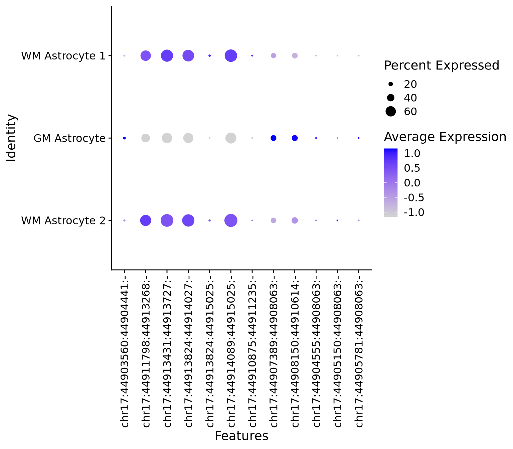
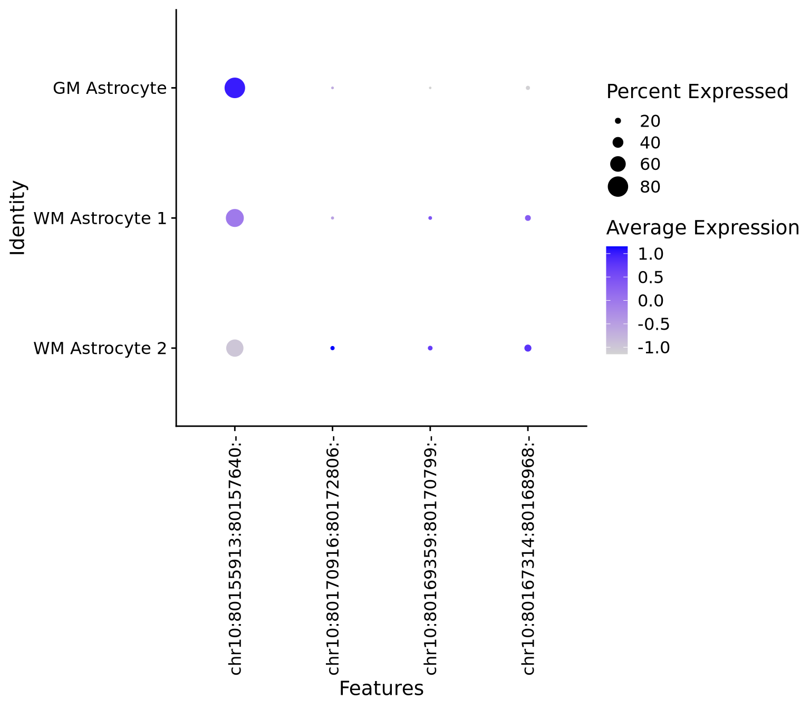
Top results per gene
print_tabset(top_tables)| cluster | junction | p_val | avg_log2FC | pct.1 | pct.2 | p_val_adj | |
|---|---|---|---|---|---|---|---|
| chr17:44903560:44904441:-.1 | GM Astrocyte | chr17:44903560:44904441:- | 0.00e+00 | 1.950 | 0.086 | 0.035 | 0.00e+00 |
| chr17:44911798:44913268:-.1 | GM Astrocyte | chr17:44911798:44913268:- | 0.00e+00 | -0.287 | 0.491 | 0.631 | 0.00e+00 |
| chr17:44903560:44904441:-.2 | WM Astrocyte 1 | chr17:44903560:44904441:- | 0.00e+00 | -1.100 | 0.026 | 0.058 | 0.00e+00 |
| chr17:44913431:44913727:- | GM Astrocyte | chr17:44913431:44913727:- | 0.00e+00 | -0.224 | 0.600 | 0.739 | 0.00e+00 |
| chr17:44913824:44914027:- | GM Astrocyte | chr17:44913824:44914027:- | 0.00e+00 | -0.178 | 0.587 | 0.709 | 0.00e+00 |
| chr17:44913824:44915025:- | GM Astrocyte | chr17:44913824:44915025:- | 0.00e+00 | -1.390 | 0.017 | 0.054 | 0.00e+00 |
| chr17:44914089:44915025:- | GM Astrocyte | chr17:44914089:44915025:- | 0.00e+00 | -0.102 | 0.645 | 0.763 | 0.00e+00 |
| chr17:44911798:44913268:- | WM Astrocyte 2 | chr17:44911798:44913268:- | 0.00e+00 | 0.102 | 0.656 | 0.583 | 0.00e+00 |
| chr17:44910875:44911235:-.2 | WM Astrocyte 1 | chr17:44910875:44911235:- | 0.00e+00 | 1.360 | 0.016 | 0.008 | 0.00e+00 |
| chr17:44907389:44908063:-.1 | WM Astrocyte 1 | chr17:44907389:44908063:- | 0.00e+00 | -0.166 | 0.249 | 0.282 | 1.00e-07 |
| chr17:44908150:44910614:- | WM Astrocyte 1 | chr17:44908150:44910614:- | 0.00e+00 | -0.178 | 0.289 | 0.324 | 1.00e-07 |
| chr17:44913824:44915025:-.1 | WM Astrocyte 1 | chr17:44913824:44915025:- | 0.00e+00 | 0.659 | 0.055 | 0.042 | 3.20e-06 |
| chr17:44907389:44908063:- | GM Astrocyte | chr17:44907389:44908063:- | 1.00e-07 | 0.599 | 0.288 | 0.263 | 6.60e-06 |
| chr17:44910875:44911235:-.1 | GM Astrocyte | chr17:44910875:44911235:- | 2.00e-07 | -1.910 | 0.004 | 0.013 | 1.34e-05 |
| chr17:44904555:44908063:-.1 | WM Astrocyte 1 | chr17:44904555:44908063:- | 2.30e-06 | -1.050 | 0.006 | 0.011 | 1.81e-04 |
| chr17:44905150:44908063:- | WM Astrocyte 2 | chr17:44905150:44908063:- | 1.29e-04 | 0.224 | 0.010 | 0.006 | 1.02e-02 |
| chr17:44904555:44908063:- | GM Astrocyte | chr17:44904555:44908063:- | 4.05e-04 | 1.230 | 0.013 | 0.007 | 3.20e-02 |
| chr17:44903560:44904441:- | WM Astrocyte 2 | chr17:44903560:44904441:- | 3.12e-03 | -0.436 | 0.047 | 0.039 | 2.46e-01 |
| chr17:44910875:44911235:- | WM Astrocyte 2 | chr17:44910875:44911235:- | 3.55e-03 | -0.835 | 0.010 | 0.014 | 2.81e-01 |
| chr17:44905781:44908063:- | WM Astrocyte 1 | chr17:44905781:44908063:- | 5.01e-03 | -0.326 | 0.010 | 0.014 | 3.96e-01 |
| cluster | junction | p_val | avg_log2FC | pct.1 | pct.2 | p_val_adj | |
|---|---|---|---|---|---|---|---|
| chr10:80155913:80157640:-.1 | GM Astrocyte | chr10:80155913:80157640:- | 0.000198 | 0.398 | 0.808 | 0.685 | 0.00337 |
| chr10:80170916:80172806:- | WM Astrocyte 2 | chr10:80170916:80172806:- | 0.001060 | 1.010 | 0.125 | 0.075 | 0.01800 |
| chr10:80155913:80157640:- | WM Astrocyte 2 | chr10:80155913:80157640:- | 0.002950 | -0.303 | 0.670 | 0.718 | 0.05010 |
| chr10:80169359:80170799:- | WM Astrocyte 2 | chr10:80169359:80170799:- | 0.003530 | 0.529 | 0.144 | 0.095 | 0.06000 |
| chr10:80167314:80168968:- | WM Astrocyte 2 | chr10:80167314:80168968:- | 0.006520 | 0.306 | 0.242 | 0.180 | 0.11100 |
Exon junction plots
For junctions I find interesting in the results above, I can draw the junction relative to a reference transcript with the functions from the helper section. The Ensembl database is downloaded with AnnotationHub into a cache folder in data/temporary/.
# Set annotationhub
setAnnotationHubOption("CACHE", dir_cache)
ah <- AnnotationHub()
# Which EnsDb records are available for human GRCh38?
query(ah, c("EnsDb", "Homo sapiens", "GRCh38"))AnnotationHub with 28 records
# snapshotDate(): 2024-10-28
# $dataprovider: Ensembl
# $species: Homo sapiens
# $rdataclass: EnsDb
# additional mcols(): taxonomyid, genome, description,
# coordinate_1_based, maintainer, rdatadateadded, preparerclass, tags,
# rdatapath, sourceurl, sourcetype
# retrieve records with, e.g., 'object[["AH53211"]]'
title
AH53211 | Ensembl 87 EnsDb for Homo Sapiens
AH53715 | Ensembl 88 EnsDb for Homo Sapiens
AH56681 | Ensembl 89 EnsDb for Homo Sapiens
AH57757 | Ensembl 90 EnsDb for Homo Sapiens
AH60773 | Ensembl 91 EnsDb for Homo Sapiens
... ...
AH109606 | Ensembl 109 EnsDb for Homo sapiens
AH113665 | Ensembl 110 EnsDb for Homo sapiens
AH116291 | Ensembl 111 EnsDb for Homo sapiens
AH116860 | Ensembl 112 EnsDb for Homo sapiens
AH119325 | Ensembl 113 EnsDb for Homo sapiens# At the moment I ran this script (and with AnnotationHub v2.30.0 and ensebmldb
# v2.30.0), the latest available one was "AH119325". I defined this specific
# version under "Defining # Variables", so open here:
edb <- ah[[ensdb_record]]
edbEnsDb for Ensembl:
|Backend: SQLite
|Db type: EnsDb
|Type of Gene ID: Ensembl Gene ID
|Supporting package: ensembldb
|Db created by: ensembldb package from Bioconductor
|script_version: 0.3.10
|Creation time: Sat Oct 26 21:34:14 2024
|ensembl_version: 113
|ensembl_host: 127.0.0.1
|Organism: Homo sapiens
|taxonomy_id: 9606
|genome_build: GRCh38
|DBSCHEMAVERSION: 2.2
|common_name: human
|species: homo_sapiens
| No. of genes: 87726.
| No. of transcripts: 413674.
|Protein data available.# Only run it for genes which have results in top_tables - genes without
# any relevant exon junctions would only give errors
gene_junction_plots <- list()
for (gene in names(top_tables)) {
# Extract junctions of this gene from previous results
junctions_to_viz <- unique(top_tables[[gene]]$junction)
# Reference transcript:
# If a manual choice was provided in "Defining Variables", use it, otherwise
# use I'm just taking the canonical transcript
transcript <- if (gene %in% names(transcript_ref)) {
transcript <- transcript_ref[[gene]]
} else {
transcript <- "canonical"
}
# Get the reference structure using the ensembl database and my function
# reference_structure()
exons_gene <- get_gene_exons(edb, gene)
ref_list <- reference_structure(gene, exons_gene, transcript = transcript)
# Plot all junctions of this gene and store plots in a list for print_tabset()
junction_plots <- list()
for (junction in (junctions_to_viz)) {
p_junction <- visualize_junction(
ref_list, gene, junction = junction, exons_gene = exons_gene
)
# A ":" cannot be in a filename, so replace it
junction_file <- str_replace_all(junction, ":", "_")
save_plot(
p_junction, paste0("junction_", gene, "_", junction_file),
width = 10, height = 4, apply_theme = FALSE
)
junction_plots[[junction]] <- p_junction
}
# Add the junction plots of this gene to the overarching per-gene list
gene_junction_plots[[gene]] <- junction_plots
}GFAP
The tabset below displays all significant GFAP junctions on the canonical transcript.
junction_plots_gfap <- gene_junction_plots$GFAP
print_tabset(junction_plots_gfap)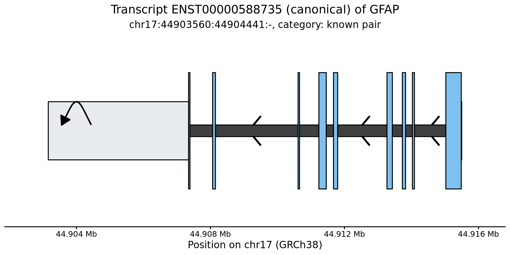
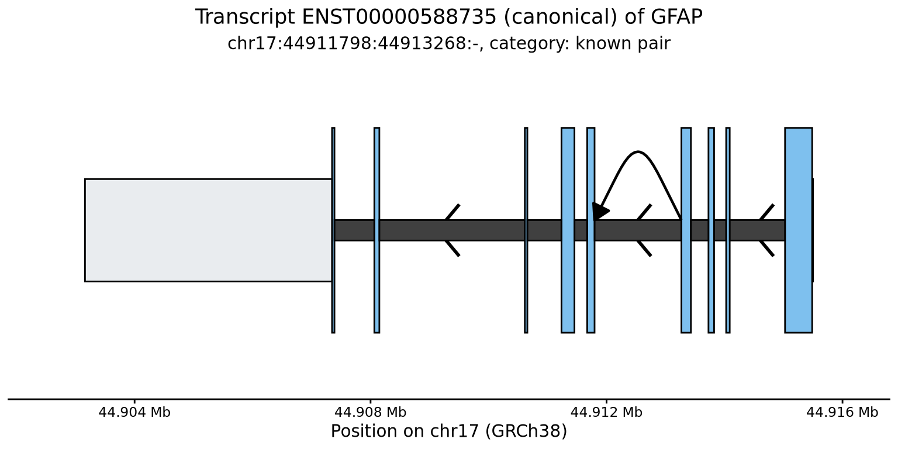
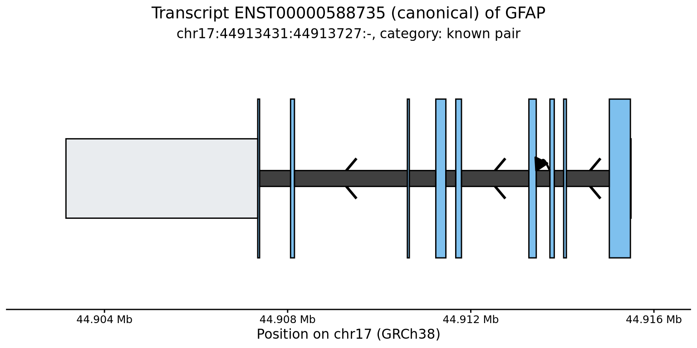
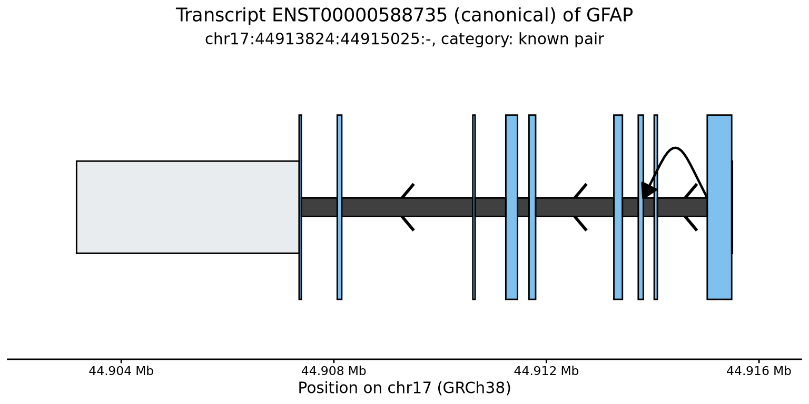
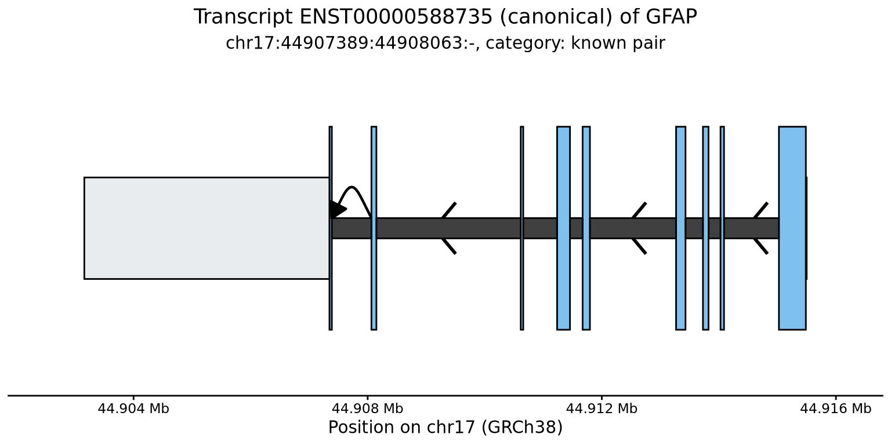
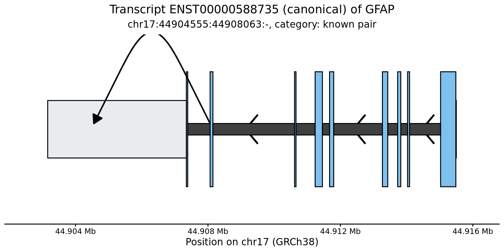
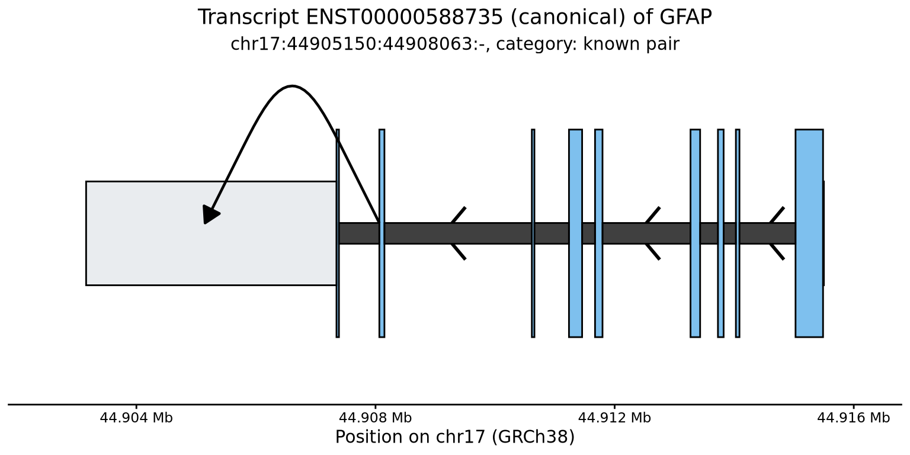
ANXA11
The tabset below displays all significant ANXA11 junctions on the canonical transcript.
junction_plots_anxa11 <- gene_junction_plots$ANXA11
print_tabset(junction_plots_anxa11)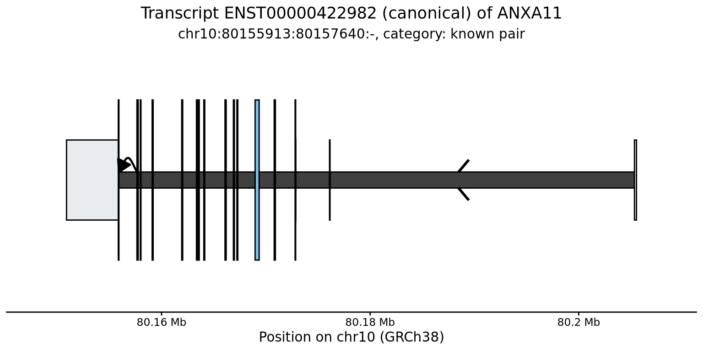
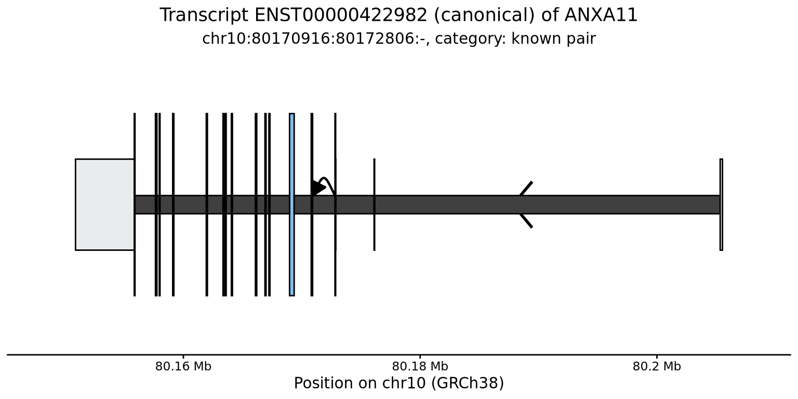
Summary plots
For my written report, I wanted all significant junctions displayed along the canonical transcript, with a label which would allow me to easily reference them in text.
gene <- "GFAP"
# I provide the input to the summary plot manually, so I can control which
# junction gets which label and which junctions should be below each other
junctions_tibble <- tribble(
~junction, ~label, ~canonical, ~layer,
"chr17:44914089:44915025", "J1", TRUE, 0,
"chr17:44913824:44914027", "J2", TRUE, 0,
"chr17:44913431:44913727", "J3", TRUE, 0,
"chr17:44911798:44913268", "J4", TRUE, 0,
"chr17:44908150:44910614", "J5", TRUE, 0,
"chr17:44907389:44908063", "J6", TRUE, 0,
"chr17:44913824:44915025", "J7", FALSE, 0,
"chr17:44910875:44911235", "J8", FALSE, 0,
"chr17:44905781:44908063", "J9", FALSE, -2,
"chr17:44905150:44908063", "J10", FALSE, -1,
"chr17:44904555:44908063", "J11", FALSE, 0,
"chr17:44903560:44904441", "J12", FALSE, -1
)
exons_gene <- get_gene_exons(edb, gene)
ref_list <- reference_structure(gene, exons_gene)
p_junc_summary_gfap <- visualize_junction(
ref_list,
gene,
multiple_junctions = TRUE,
junctions_tibble = junctions_tibble
)
# Save to disk
save_plot(
p_junc_summary_gfap, "junction_summary_gfap",
width = 10, height = 4,
figure = "F6C"
)
# Print for display
p_junc_summary_gfap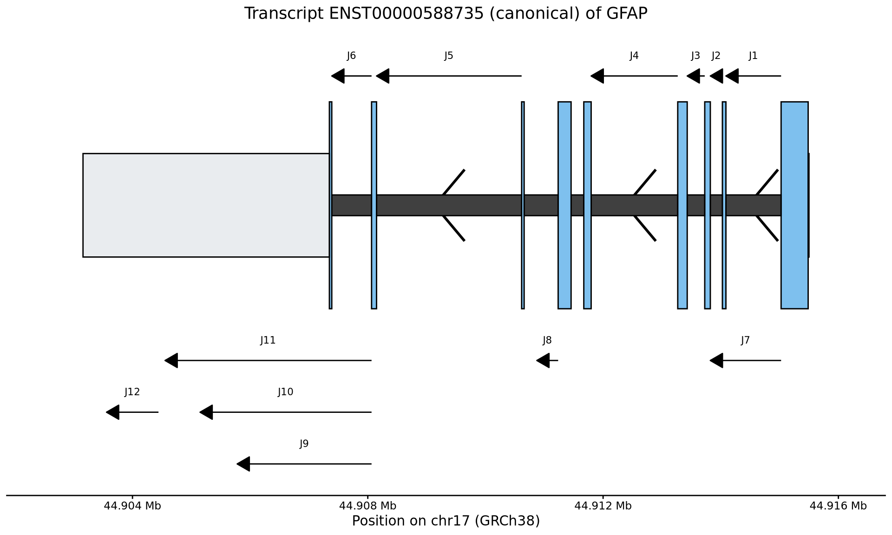
gene <- "ANXA11"
# I provide the input to the summary plot manually, so I can control which
# junction gets which label and which junctions should be below each other
junctions_tibble_anxa11 <- tribble(
~junction, ~label, ~canonical, ~layer,
"chr10:80170916:80172806:-", "J13", TRUE, 0,
"chr10:80155913:80157640:-", "J14", TRUE, 0
)
exons_gene <- get_gene_exons(edb, gene)
ref_list <- reference_structure(gene, exons_gene)
p_junc_summary_anxa <- visualize_junction(
ref_list,
gene,
multiple_junctions = TRUE,
junctions_tibble = junctions_tibble_anxa11
)
# Save to disk
save_plot(
p_junc_summary_anxa, "junction_summary_anxa",
width = 10, height = 4,
figure = "F6D"
)
# Print for display
p_junc_summary_anxa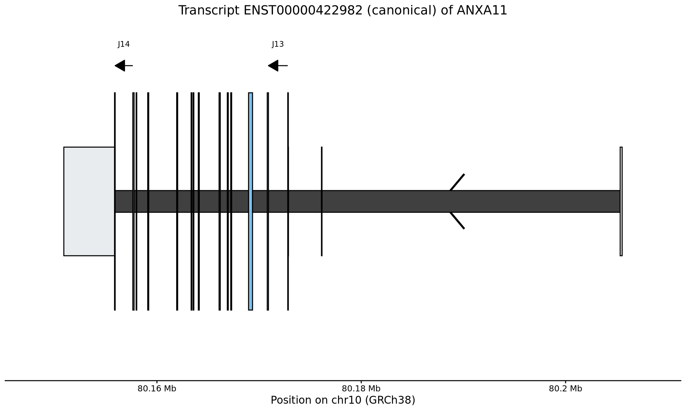
Non-canonical junctions of GFAP
I observed several significant non-canonical splicing events of GFAP. I wanted to display these on transcripts which matches them. I print the tibble with the results of which_known_transcript() - while you cannot see everything within it, you can see how many transcripts match it (and printing it with kable() became to broad a table to fit on the page, so I settled for the tibble).
Exon-skipping of exon 2 (chr17:44913824:44915025)
# Set default for all next GFAP visualizations
gene <- "GFAP"
exons_gene <- get_gene_exons(edb, gene)
# I looked up the xmin and xmax of the canonical transcript and will set this
# manually for all further GFAP transcripts
xmin <- 44902542
xmax <- 44916117
# Set junction
junction_to_plot <- "chr17:44913824:44915025"
# Extract junction label from the tibble in which I defined
junction_to_plot_label <- junctions_tibble[
junctions_tibble$junction == junction_to_plot,
"label"
]
# Examine which known junctions there are for this gene
tx_hits <- which_known_transcript(junction_to_plot, exons_gene,
type = "auto", tolerance = 0)
tx_hits# A tibble: 1 × 10
tx_id tx_name is_canonical match_level donor_offset acceptor_offset distance
<chr> <chr> <lgl> <fct> <dbl> <dbl> <dbl>
1 ENST00… ENST00… FALSE full 0 0 0
# ℹ 3 more variables: donor_match <lgl>, acceptor_match <lgl>, pair_match <lgl># Visualize the junction on the available transcript
ref_list <- reference_structure(gene, exons_gene, transcript = tx_hits$tx_id[1])
p_junc <- visualize_junction(ref_list, gene, junction = junction_to_plot,
exons_gene = exons_gene, manual_margin = TRUE,
xmin = xmin, xmax = xmax,
junction_label = junction_to_plot_label)
# Save to disk
save_plot(p_junc, "junction_noncan_exon2skip",
width = 10, height = 4,
figure = "F6E")
p_junc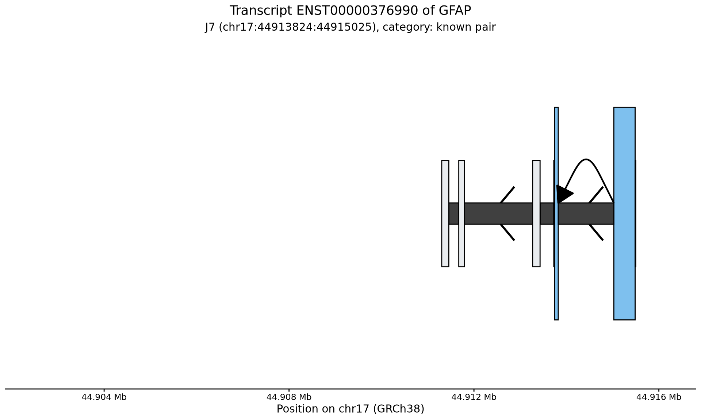
Alternative acceptor exon 7 (chr17:44910875:44911235)
# Set junction
junction_to_plot <- "chr17:44910875:44911235"
# Extract junction label from the tibble in which I defined
junction_to_plot_label <- junctions_tibble[
junctions_tibble$junction == junction_to_plot,
"label"
]
# Examine which known junctions there are for this gene
tx_hits <- which_known_transcript(junction_to_plot, exons_gene,
type = "auto", tolerance = 0)
tx_hits# A tibble: 1 × 10
tx_id tx_name is_canonical match_level donor_offset acceptor_offset distance
<chr> <chr> <lgl> <fct> <dbl> <dbl> <dbl>
1 ENST00… ENST00… FALSE full 0 0 0
# ℹ 3 more variables: donor_match <lgl>, acceptor_match <lgl>, pair_match <lgl># Visualize the junction on the available transcript
ref_list <- reference_structure(gene, exons_gene, transcript = tx_hits$tx_id[1])
p_junc <- visualize_junction(ref_list, gene, junction = junction_to_plot,
exons_gene = exons_gene, manual_margin = TRUE,
xmin = xmin, xmax = xmax, curvature_arrow = 6,
junction_label = junction_to_plot_label)
# Save to disk
save_plot(p_junc, "junction_noncan_altacceptor7",
width = 10, height = 4,
figure = "F6F", add_tag = TRUE)
p_junc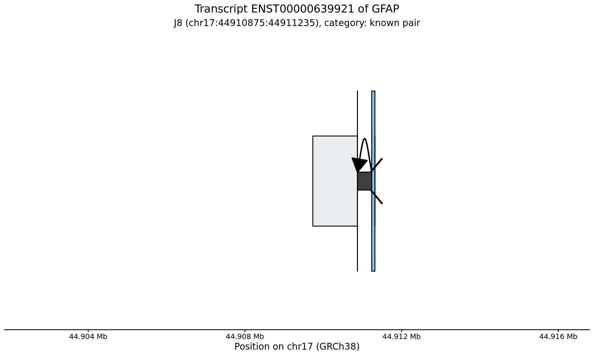
Three junctions from exon 8 into 3’ UTR
(chr17:44904555:44908063)
# Set junction
junction_to_plot <- "chr17:44904555:44908063"
# Extract junction label from the tibble in which I defined
junction_to_plot_label <- junctions_tibble[
junctions_tibble$junction == junction_to_plot,
"label"
]
# Examine which known junctions there are for this gene
tx_hits <- which_known_transcript(junction_to_plot, exons_gene,
type = "auto", tolerance = 0)
tx_hits# A tibble: 2 × 10
tx_id tx_name is_canonical match_level donor_offset acceptor_offset distance
<chr> <chr> <lgl> <fct> <dbl> <dbl> <dbl>
1 ENST00… ENST00… FALSE full 0 0 0
2 ENST00… ENST00… FALSE full 0 0 0
# ℹ 3 more variables: donor_match <lgl>, acceptor_match <lgl>, pair_match <lgl># Visualize the junction on the first available transcript
ref_list <- reference_structure(gene, exons_gene, transcript = tx_hits$tx_id[1])
p_junc <- visualize_junction(ref_list, gene, junction = junction_to_plot,
exons_gene = exons_gene, manual_margin = TRUE,
xmin = xmin, xmax = xmax, curvature_arrow = 0.8,
junction_label = junction_to_plot_label)
# Save to disk
save_plot(p_junc, "junction_noncan_exon8utr1",
width = 10, height = 4,
figure = "F6G", add_tag = TRUE)
p_junc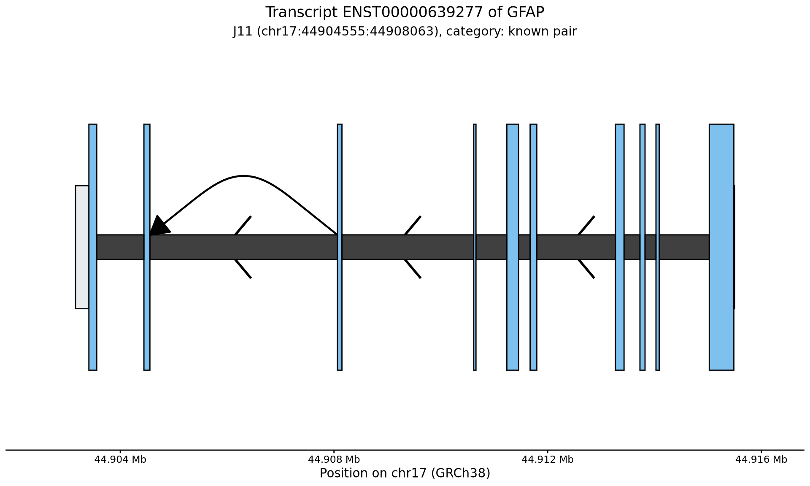
(chr17:44905150:44908063)
# Set junction
junction_to_plot <- "chr17:44905150:44908063"
# Extract junction label from the tibble in which I defined
junction_to_plot_label <- junctions_tibble[
junctions_tibble$junction == junction_to_plot,
"label"
]
# Examine which known junctions there are for this gene
tx_hits <- which_known_transcript(junction_to_plot, exons_gene,
type = "auto", tolerance = 0)
tx_hits# A tibble: 8 × 10
tx_id tx_name is_canonical match_level donor_offset acceptor_offset distance
<chr> <chr> <lgl> <fct> <dbl> <dbl> <dbl>
1 ENST00… ENST00… FALSE full 0 0 0
2 ENST00… ENST00… FALSE full 0 0 0
3 ENST00… ENST00… FALSE full 0 0 0
4 ENST00… ENST00… FALSE full 0 0 0
5 ENST00… ENST00… FALSE full 0 0 0
6 ENST00… ENST00… FALSE full 0 0 0
7 ENST00… ENST00… FALSE full 0 0 0
8 ENST00… ENST00… FALSE full 0 0 0
# ℹ 3 more variables: donor_match <lgl>, acceptor_match <lgl>, pair_match <lgl># Visualize the junction on the third available transcript - the first two did
# not have UTR info
ref_list <- reference_structure(gene, exons_gene, transcript = tx_hits$tx_id[3])
p_junc <- visualize_junction(ref_list, gene, junction = junction_to_plot,
exons_gene = exons_gene, manual_margin = TRUE,
xmin = xmin, xmax = xmax, curvature_arrow = 0.8,
junction_label = junction_to_plot_label)
# Save to disk
save_plot(p_junc, "junction_noncan_exon8utr2",
width = 10, height = 4,
figure = "F6H", add_tag = TRUE)
p_junc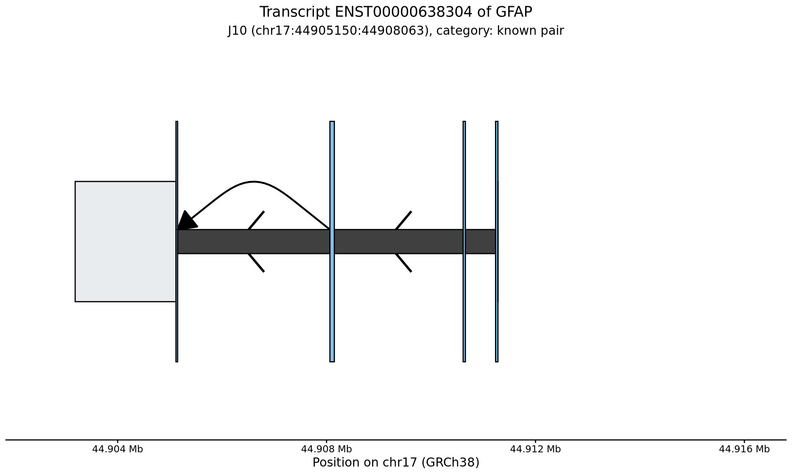
(chr17:44905781:44908063)
# Set junction
junction_to_plot <- "chr17:44905781:44908063"
# Extract junction label from the tibble in which I defined
junction_to_plot_label <- junctions_tibble[
junctions_tibble$junction == junction_to_plot,
"label"
]
# Examine which known junctions there are for this gene
tx_hits <- which_known_transcript(junction_to_plot, exons_gene,
type = "acceptor", tolerance = 500)
tx_hits# A tibble: 2 × 10
tx_id tx_name is_canonical match_level donor_offset acceptor_offset distance
<chr> <chr> <lgl> <fct> <dbl> <dbl> <dbl>
1 ENST00… ENST00… FALSE full 0 281 281
2 ENST00… ENST00… FALSE full 0 -384 384
# ℹ 3 more variables: donor_match <lgl>, acceptor_match <lgl>, pair_match <lgl># Visualize this junction on the canonical transcript, as there is no full match
ref_list <- reference_structure(gene, exons_gene)
p_junc <- visualize_junction(ref_list, gene, junction = junction_to_plot,
exons_gene = exons_gene, manual_margin = TRUE,
xmin = xmin, xmax = xmax, curvature_arrow = 0.8,
junction_label = junction_to_plot_label)
# Save to disk
save_plot(p_junc, "junction_noncan_exon8utr3",
width = 10, height = 4,
figure = "F6I", add_tag = TRUE)
p_junc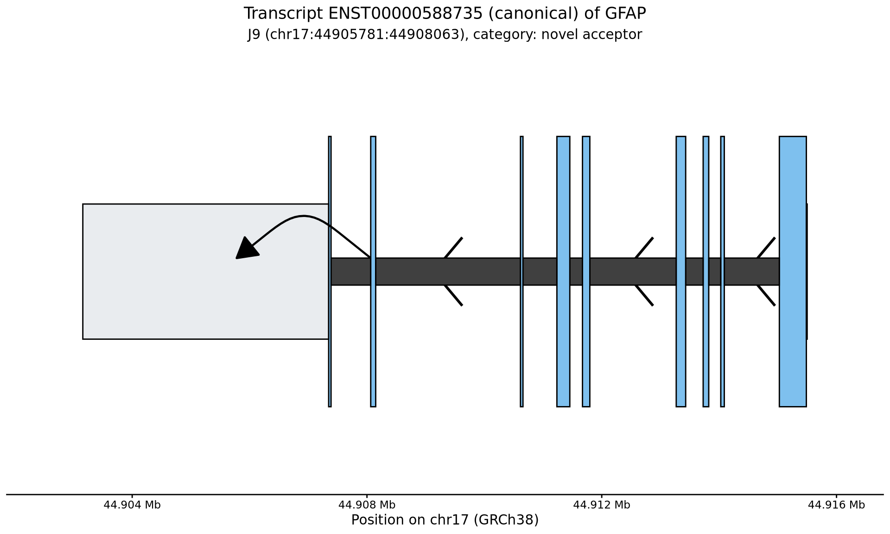
Both donor and acceptor in 3’ UTR (chr17:44903560:44904441)
# Set junction
junction_to_plot <- "chr17:44903560:44904441"
# Extract junction label from the tibble in which I defined
junction_to_plot_label <- junctions_tibble[
junctions_tibble$junction == junction_to_plot,
"label"
]
# Examine which known junctions there are for this gene
tx_hits <- which_known_transcript(junction_to_plot, exons_gene,
type = "auto", tolerance = 0)
tx_hits# A tibble: 5 × 10
tx_id tx_name is_canonical match_level donor_offset acceptor_offset distance
<chr> <chr> <lgl> <fct> <dbl> <dbl> <dbl>
1 ENST00… ENST00… FALSE full 0 0 0
2 ENST00… ENST00… FALSE full 0 0 0
3 ENST00… ENST00… FALSE full 0 0 0
4 ENST00… ENST00… FALSE full 0 0 0
5 ENST00… ENST00… FALSE full 0 0 0
# ℹ 3 more variables: donor_match <lgl>, acceptor_match <lgl>, pair_match <lgl># Visualize the junction on the fourth available transcript; on that one, it
# actually is between translated exons, the others were between UTRs
ref_list <- reference_structure(gene, exons_gene, transcript = tx_hits$tx_id[4])
p_junc <- visualize_junction(ref_list, gene, junction = junction_to_plot,
exons_gene = exons_gene, manual_margin = TRUE,
xmin = xmin, xmax = xmax,
junction_label = junction_to_plot_label)
# Save to disk
save_plot(p_junc, "junction_noncan_fullutr",
width = 10, height = 4,
figure = "F6J", add_tag = TRUE)
p_junc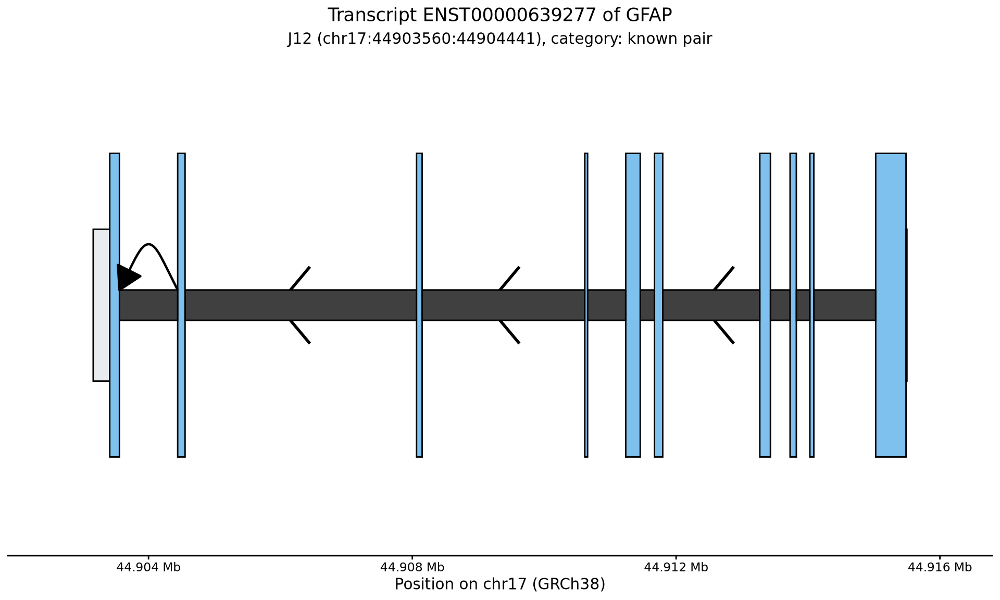
Session info
I used the conda environment r_scrnaseq_core to run this script. You can find major package versions in the file /environments/r_scrnaseq_core.yml, but for full reproducibility, I’ll display all dependencies and package versions below.
sessionInfo()R version 4.4.3 (2025-02-28)
Platform: x86_64-conda-linux-gnu
Running under: Rocky Linux 8.10 (Green Obsidian)
Matrix products: default
BLAS/LAPACK: /path/to/folder/software/miniforge/miniforge3/envs/r_scrnaseq_core/lib/libopenblasp-r0.3.34.so; LAPACK version 3.12.0
locale:
[1] LC_CTYPE=en_US.UTF-8 LC_NUMERIC=C
[3] LC_TIME=en_US.UTF-8 LC_COLLATE=en_US.UTF-8
[5] LC_MONETARY=en_US.UTF-8 LC_MESSAGES=en_US.UTF-8
[7] LC_PAPER=en_US.UTF-8 LC_NAME=C
[9] LC_ADDRESS=C LC_TELEPHONE=C
[11] LC_MEASUREMENT=en_US.UTF-8 LC_IDENTIFICATION=C
time zone: Europe/Amsterdam
tzcode source: system (glibc)
attached base packages:
[1] stats4 stats graphics grDevices utils datasets methods
[8] base
other attached packages:
[1] ensembldb_2.30.0 AnnotationFilter_1.30.0 GenomicFeatures_1.58.0
[4] AnnotationDbi_1.68.0 Biobase_2.66.0 GenomicRanges_1.58.0
[7] GenomeInfoDb_1.42.0 IRanges_2.40.0 S4Vectors_0.44.0
[10] AnnotationHub_3.14.0 BiocFileCache_2.14.0 dbplyr_2.6.0
[13] BiocGenerics_0.52.0 Seurat_5.5.1 SeuratObject_5.4.0
[16] sp_2.2-3 here_1.0.2 knitr_1.52
[19] patchwork_1.3.2 lubridate_1.9.5 forcats_1.0.1
[22] stringr_1.6.0 dplyr_1.2.1 purrr_1.2.2
[25] readr_2.2.0 tidyr_1.3.2 tibble_3.3.1
[28] ggplot2_4.0.3 tidyverse_2.0.0
loaded via a namespace (and not attached):
[1] RcppAnnoy_0.0.23 splines_4.4.3
[3] later_1.4.8 BiocIO_1.16.0
[5] bitops_1.1-0 filelock_1.0.3
[7] polyclip_1.10-7 XML_3.99-0.23
[9] fastDummies_1.7.6 lifecycle_1.0.5
[11] rprojroot_2.1.1 vroom_1.7.1
[13] globals_0.19.1 lattice_0.23-1
[15] MASS_7.3-66 magrittr_2.0.5
[17] limma_3.62.1 plotly_4.12.1
[19] rmarkdown_2.32 yaml_2.3.12
[21] httpuv_1.6.17 otel_0.2.0
[23] sctransform_0.4.3 spam_2.11-4
[25] spatstat.sparse_3.2-0 reticulate_1.47.0
[27] cowplot_1.2.0 pbapply_1.7-4
[29] DBI_1.3.0 RColorBrewer_1.1-3
[31] abind_1.4-8 zlibbioc_1.52.0
[33] Rtsne_0.17 presto_1.0.0
[35] RCurl_1.98-1.19 rappdirs_0.3.4
[37] GenomeInfoDbData_1.2.13 ggrepel_0.9.8
[39] irlba_2.3.7 listenv_1.0.0
[41] spatstat.utils_3.2-5 goftest_1.2-3
[43] RSpectra_0.16-2 spatstat.random_3.5-1
[45] fitdistrplus_1.2-6 parallelly_1.48.0
[47] DelayedArray_0.32.0 codetools_0.2-20
[49] tidyselect_1.2.1 UCSC.utils_1.2.0
[51] farver_2.1.2 matrixStats_1.5.0
[53] spatstat.explore_3.8-2 GenomicAlignments_1.42.0
[55] jsonlite_2.0.0 progressr_1.0.0
[57] ggridges_0.5.7 survival_3.8-12
[59] systemfonts_1.3.2 tools_4.4.3
[61] ragg_1.5.2 ica_1.0-3
[63] Rcpp_1.1.2 glue_1.8.1
[65] SparseArray_1.6.0 gridExtra_2.3.1
[67] xfun_0.60 MatrixGenerics_1.18.0
[69] withr_3.0.3 BiocManager_1.30.27
[71] fastmap_1.2.0 digest_0.6.39
[73] timechange_0.4.0 R6_2.6.1
[75] mime_0.13 textshaping_1.0.5
[77] scattermore_1.2 tensor_1.5.1
[79] spatstat.data_3.1-9 RSQLite_3.53.3
[81] utf8_1.2.6 generics_0.1.4
[83] data.table_1.18.6.1 rtracklayer_1.66.0
[85] S4Arrays_1.6.0 httr_1.4.9
[87] htmlwidgets_1.6.4 uwot_0.2.5
[89] pkgconfig_2.0.3 gtable_0.3.6
[91] blob_1.3.0 lmtest_0.9-40
[93] S7_0.2.2 XVector_0.46.0
[95] htmltools_0.5.9 dotCall64_1.2
[97] ProtGenerics_1.38.0 scales_1.4.0
[99] png_0.1-9 spatstat.univar_3.2-0
[101] tzdb_0.5.0 reshape2_1.4.5
[103] rjson_0.2.23 nlme_3.1-170
[105] curl_8.0.0 cachem_1.1.0
[107] zoo_1.9-0 BiocVersion_3.20.0
[109] KernSmooth_2.23-27 vipor_0.4.7
[111] parallel_4.4.3 miniUI_0.1.2
[113] ggrastr_1.0.2 restfulr_0.0.16
[115] pillar_1.11.1 grid_4.4.3
[117] vctrs_0.7.3 RANN_2.6.2
[119] promises_1.5.0 xtable_1.8-8
[121] cluster_2.1.8.3 beeswarm_0.4.0
[123] evaluate_1.0.5 Rsamtools_2.22.0
[125] cli_3.6.6 compiler_4.4.3
[127] rlang_1.3.0 crayon_1.5.3
[129] future.apply_1.20.2 labeling_0.4.3
[131] ggbeeswarm_0.7.3 plyr_1.8.9
[133] stringi_1.8.9 BiocParallel_1.40.0
[135] viridisLite_0.4.3 deldir_2.0-4
[137] Biostrings_2.74.0 lazyeval_0.2.3
[139] spatstat.geom_3.8-2 Matrix_1.7-6
[141] RcppHNSW_0.7.0 hms_1.1.4
[143] bit64_4.8.6 future_1.76.0
[145] statmod_1.5.2 KEGGREST_1.46.0
[147] shiny_1.14.0 SummarizedExperiment_1.36.0
[149] ROCR_1.0-12 igraph_2.3.3
[151] memoise_2.0.1 bit_4.6.0